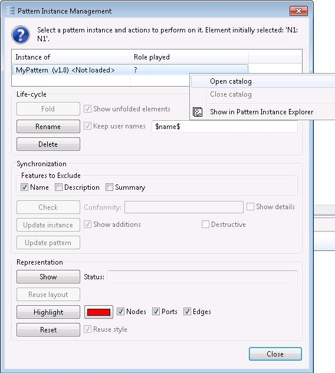

The Interface Management Panel
The upper part of the Instance Management Panel shows what element was selected (“Element initially selected”) and what role(s) it plays in the instance(s) it belongs to (“Role played”). If several instances are involved, you may select one or several of them in the table. Each instance is identified by the name of the pattern and the version of the pattern the instance was lastly updated with.
The lower part of the Panel contains groups of buttons for executing actions on the selected instance(s).

If the pattern of an instance is not loaded, which happens if it belongs to a catalog which is not open, it is marked as “” in the table. Double-click it, or right-click it and select the “Open catalog” menu item, to open the catalog. If the catalog is not present in the workspace at the same location as before (e.g., it has been moved), a dialog allows the user to retrieve it. The catalog can be closed later by similarly selecting the “Close catalog” menu item.

When a catalog is opened or closed, several buttons in the panel are enabled or disabled. This is because most actions require the pattern of the instance to be loaded.